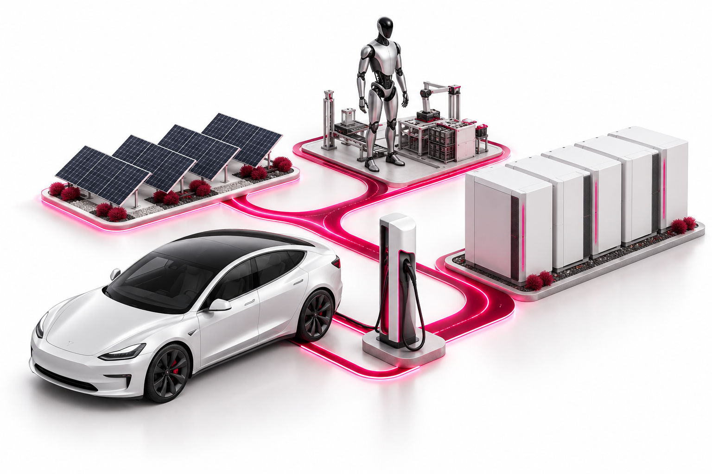
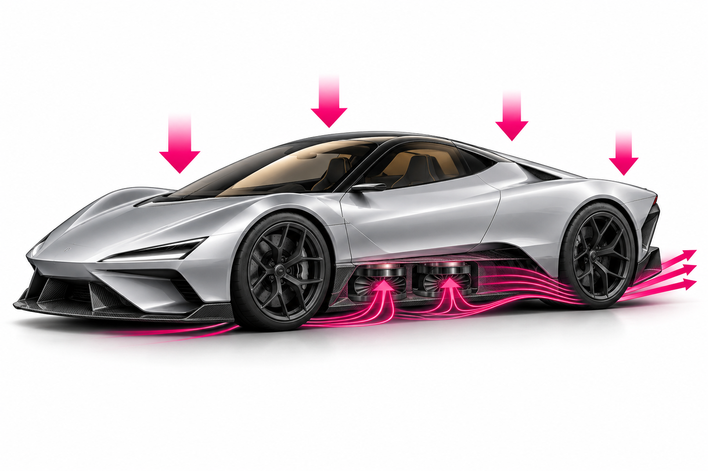

기존 사업의 수익성
자동차 판매가 이익과 현금흐름으로 이어지는지, 에너지·서비스의 기여가 커지는지 확인합니다.
TESLA BUSINESS BRIEFING
자동차, 에너지, AI 사업의 현황과
신형 로드스터의 기술을 살펴봅니다.
2페이지에서 장표 크기로 영상 자동 재생 · 다음 장은 직접 이동
운영 실적 Q3 2026 · 재무 실적 Q2 2026

MOBILITYBUSINESS PERFORMANCE
자동차가 매출의 중심을 지키는 가운데, 서비스 매출이 빠르게 늘었습니다.
사업 이름이나 막대를 눌러 세부 내용을 확인하세요.
Q2 2026 전체 매출
2026년 누적 매출 보기 ↗
전년 동기 대비 +25.5%
서비스·기타 매출은 45.81억 달러로 전년 동기보다 50.4% 늘었습니다. 충전·정비 등 기존 차량 기반 사업도 커지고 있습니다.
매출 성장과 수익성은 함께 봐야 합니다. 영업비용과 설비투자가 늘어난 분기입니다.
출처: Tesla Q2 2026 Update, pp. 4–5 · 전년 동기 비교 · 증가율·비중은 원자료로 계산 · B = 10억 달러
THREE-YEAR PERFORMANCE
2023~2025년 연간 실적 · 연도를 누르면 매출·생산량과 주요 재무지표가 함께 바뀝니다.
2025년 실적 선택
2025년 연결 매출
948.27억 달러전년 대비 −2.9%
2025년 차량 생산량
1,654,667대전년 대비 −6.7%
순이익은 보통주주 귀속 GAAP 기준입니다.
2025년 매출과 차량 생산량은 전년보다 감소했습니다. 영업이익률은 4.6%입니다.
출처: Tesla 2025 Form 10-K · Q4 & FY 2025 Update, pp. 5, 7 · 생산량 ≠ 인도량 · 2026년 연간 실적 미확정
LATEST OPERATIONS
3분기 운영 수치를 먼저 확인하고, 수익성은 별도 재무 발표로 판단합니다.
Q3 2026 차량 인도
486,532대Model 3/Y가 3분기 인도의 98.3%를 차지합니다.
Q3 2026 에너지 저장 배치량
13.7GWh배치량은 설치·공급 규모를 보여주는 운영 지표입니다.
출처: Tesla Q3 2026 운영 실적, Q2 2026 Update, p. 5 · 운영 수치만으로 매출·이익을 추정하지 않음 · Q3 재무 발표 예정: 10월 21일(미국)
GROWTH ROADMAP
사업별 소제목을 누르면 아래에서 상세 패널이 올라옵니다.
공개 현황 · Q2 2026 Update
소제목을 눌러 자세히 보기텍사스에서 Cybercab 생산을 시작했습니다. 실제 Robotaxi 운행 확대와 차량 생산 확대는 각각의 진행 상황을 확인해야 합니다.
서비스 지역의 허가 조건, 운행 범위와 유료 이용 실적
생산 개시는 대량 생산과 다릅니다. 아래 계획은 회사가 2분기 자료에서 제시한 내용이며, 일정은 달라질 수 있습니다.
출처: Tesla Q2 2026 Update, pp. 6–10 · FSD (Supervised)는 운전자의 적극적인 감독이 필요하며 차량을 자율주행으로 만들지 않음
THE NEW ROADSTER
아래의 Performance에서 위의 Rocket까지 · 레버를 움직이면 이미지와 설명이 함께 바뀝니다.
 Performance
Performance사양 선택
위로 올릴수록 확장 사양
Performance
기본 구성 · 예약
이인승 구성에 능동 공력장치와 멀티모드 흡입 시스템을 결합합니다. 테슬라가 공개한 제품 설명 기준입니다.
테슬라 공개 가속 범위 · Thrust 옵션
색칠 영역은 ‘1초 미만’ 범위이며 실측값이 아닙니다. 60mph ≈ 96.6km/h
출처: Tesla Roadster 공식 페이지 · 2026.10.18 확인 · 옵션·지역별 법적 요건 적용 · Rocket은 일부 지역 미제공, 공도 사용 미승인
ROADSTER TECHNOLOGY
오른쪽 기술 이름을 누르면 화면 가운데에서 자세한 설명을 볼 수 있습니다.

기술 항목 클릭 → 상세 설명 팝업
팬과 지면 밀폐 구조가 차량 아래 공기를 배출해 다운포스를 만듭니다. 그림의 아래 방향 화살표는 이 힘을 표현합니다.
출처: Tesla Roadster 공식 기술 설명 · 제조사 설명이며 독립 성능 검증을 의미하지 않음 · 냉가스 추력은 Thrust·Rocket 옵션 구성에 따라 다름
WHAT TO WATCH
사업 확대의 속도와 함께
실제 고객 인도와 현금흐름을 확인해야 합니다.
자동차 판매가 이익과 현금흐름으로 이어지는지, 에너지·서비스의 기여가 커지는지 확인합니다.
Cybercab 생산과 Robotaxi 운행을 구분하고, Semi·Megapack·Optimus의 생산 진척을 봅니다.
최종 제원과 지역별 승인, 생산 일정과 실제 인도 실적이 후속 확인 지점입니다.
발표자의 관찰 포인트 · 투자 권유가 아닌 사업 현황 설명
근거: Tesla Q2 2026 Update, Q3 2026 운영 실적, Roadster 공식 페이지 · 사업 전망·기술 목표와 확정 실적을 구분하여 정리
TESLA BRAND FILM
MADE BY AKER
사용한 이미지와 영상에는
AI로 제작·편집한 자료가 포함되어 있습니다.
만든이 : 유튜브 에이커